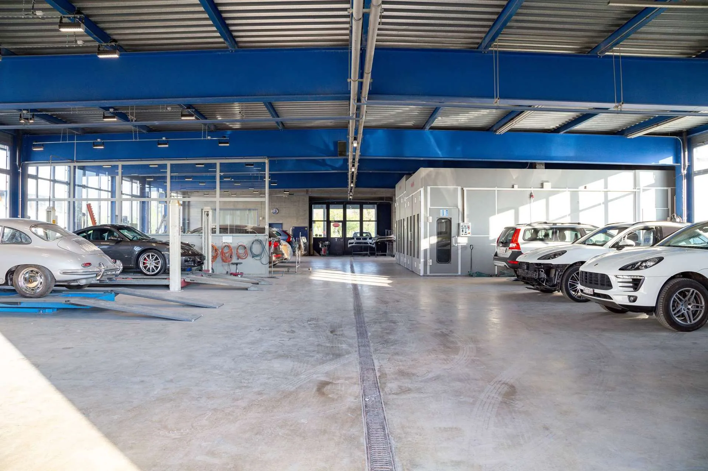

Tôlerie
Quelle que soit l’importance du dégât, nous apportons la réparation adéquate : redressage traditionnel de la tôle et de l’aluminium, débosselage, remplacement de pièces d’origine.
- Débosselage
- Marbre de redressage
- Traitement antirouille